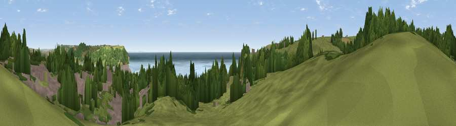

Viewpoint near Seaton
#8791 in England · top 19% of its area beats it · near SeatonThe view, rendered

A 360° render of this exact spot computed from the terrain model, tree cover and land cover — summer colours, afternoon light, calibrated against photographs of famous viewpoints. Real trees, hedges and buildings will differ in detail.
The panorama
Grey silhouette: terrain skyline in each direction (720 bearings, Earth curvature and refraction included). Dashed green: skyline with trees (+15 m) and buildings (+8 m) as obstacles. Blue strip: how far the ground is visible on each bearing.
Where the view opens
Wedge length = distance to the farthest visible ground on that bearing (vegetation-aware). Rings at 10, 25 and 50 km.
What fills the view
42% woodland · 22% grassland · 17% water · 14% built-up · 5% cropland
Angular shares of the visible panorama (visual magnitude), not map area. Landscape diversity 0.63 (0–1 Shannon).
Key numbers
More beautiful places nearby
The staircase of upgrades: each row has a higher view potential than everything closer. Driving times are estimates from straight-line distance, calibrated against real road routing — check an actual route before setting out.
| Place | Direction | Drive | Score |
|---|---|---|---|
| Viewpoint near Seaton | NNW · 1 km | ~3 min | 67.3 |
| Viewpoint near Beer | SW · 2 km | ~6 min | 79.1 |
| Viewpoint near Branscombe | SW · 3 km | ~7 min | 80.5 |
| Viewpoint near Axmouth | E · 5 km | ~12 min | 82.4 |
| Viewpoint near Sidmouth | WSW · 13 km | ~24 min | 83.0 |
| High Peak | WSW · 14 km | ~25 min | 85.3 |
| Golden Cap | E · 17 km | ~30 min | 88.7 |
| The Knoll | E · 30 km | ~47 min | 91.0 |
50.70572, -3.08366 · source: screening · position refined by local search. Computed location — check access rights before visiting.